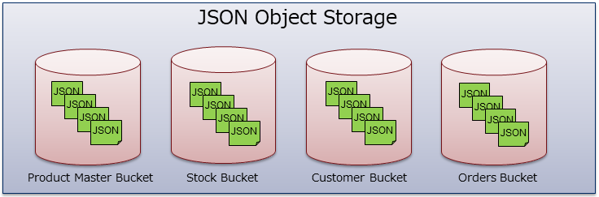

2.4. オブジェクトストレージ¶
2.4.1. オブジェクトストレージの概要¶
オブジェクトストレージは、JSON 形式でのオブジェクトを保存、検索、読み出しすることができるデータベースです。 アプリケーションで扱うほとんどのデータ（ファイルデータ以外）は、オブジェクトストレージに格納することができます。
オブジェクトストレージは、リレーショナルデータベースとは異なり、スキーマレスデータベースです。 複雑な構造(ネストした構造、配列など)をそのまま格納することができますし、スキーマの変更も容易です。
また、JSON形式でそのままデータを扱うことができますので、特に JavaScript との親和性は非常に良いものとなっています。
2.4.2. オブジェクトバケット¶
オブジェクトストレージを利用するにあたっては、「バケット」の概念を理解する必要があります。 バケットは、BaaS のデータを格納する入れ物（箱）のことです。 JSON オブジェクトを格納するバケットを、特に「オブジェクトバケット」と呼びます。
バケットとは、リレーショナルデータベースでいうところの「テーブル」に該当する概念です （JSONオブジェクトはテーブルの１行に相当します）。
リレーショナルデータベースと異なり、バケットには事前にスキーマを定義する必要はありません。 任意の種類の JSON オブジェクトを格納することも可能です。 しかし、通常は用途や種類別にそれぞれ個別にバケットを用意したほうが、管理や検索が容易になります。
例えば、以下の図に示すように、商品マスタ、在庫、顧客、伝票、などごとにバケットを分けるのが良いでしょう。
注意
テナント毎に作成できるバケット数には限界があります。 諸元として保証しているバケット数の上限は1テナントあたり1,000個です。
バケット運用のベストプラクティス¶
上述した通り、バケットは用途や種類別に個別に作成することを推奨します。
バケットをユーザ毎に作ることは避けて下さい。 バケットは種類別にのみ作成し、全ユーザのデータを用途・種類別にバケットに格納するようにします。 そして、ユーザごとのデータの分離は、ACLで行うようにしてください。
このようにする理由は以下のとおりです。
- プログラムの実装が容易
- ユーザ間のデータ共有が容易
- ユーザ毎にバケットを作成すると、ユーザ数が増えた時にバケット数の上限に達してしまう可能性がある。
バケットは、アプリケーションの開発時にすべて事前に作成・設定を行っておき、 それぞれのアプリケーションからは個別にはバケットは作成しないことを推奨します。
バケットのアクセス制御¶
バケットには以下二種類の ACL があります。 これらの ACL は、デベロッパーコンソールで設定可能です。
- バケットACL : バケットそのものを操作するときのアクセス制御を行うACL。
- コンテンツACL : バケットの内容(オブジェクト)にアクセスするときのアクセス制御を行うACL。
ACL については後述します。
2.4.3. バケットの操作¶
バケットの操作（作成・削除・ACL変更)は、デベロッパーコンソール上で行うことができます。
また、一部の SDK はバケットの作成、変更、削除用の API を提供しています。
2.4.4. オブジェクトの作成¶
オブジェクトバケットには JSON 形式のオブジェクトを格納することができます。
オブジェクトは、典型的には以下のような形式になります。
{
"_id": "521c36d4ac521e1ffa000007",
"name": "Foo",
"score": 80.0
"ACL": {
"owner": "01234567890",
"r": ["g:authenticated"],
"w": ["g:authenticated"],
},
"createdAt": "2013-08-27T05:19:16.000Z",
"updatedAt": "2013-08-27T05:19:16.000Z"
}
任意の形の JSON データを格納することができますが、このうちいくつかの プロパティについては予約プロパティとなっています。具体的には 以下のプロパティです。
- '_id' : オブジェクトを一意に識別する ID （プライマリキー）です。通常は、データ挿入時にサーバ側が自動で採番します。
- 'ACL' : アクセス制御リストです。
- 'createdAt : オブジェクトの作成時刻です。
- 'updatedAt : オブジェクトの更新時刻です。
2.4.5. JSON仕様について¶
JSONには MongoDB Extended JSON仕様 を 使用することができます (v7.0以降)。 これを利用して、日付・タイムスタンプ・バイナリなどのデータをそのままの型で格納することが可能です。
Extended JSON には Canonical, Relaxed の２つのフォーマットがあります。保存時には Canonical, Relaxed いずれの形式でも受け付けますが、 取得時には常に Relaxed 形式で返却します。Canonical/Relaxed は、数値と日付型の表記の違いがあります。 以下に例を示します。
// Canonical
{
a: {"$numberInt": "2147483647"} ,
b: {"$numberLong": "9223372036854775807"},
c: {"$numberDouble": "300.5"}
d: {"$date": {"$numberLong": "1514732400000"}}
}
// Relaxed
{
a: 2147483647,
b: 9223372036854775807,
c: 300.5,
d: {"$date": "2018-01-01T00:00:00.000Z"}
}
保存時に Relaxed フォーマットを使用する場合、JSON に記述する数値の型は自動的に判定されます。 具体的には、32bit整数型、64bit整数型、倍精度浮動小数点型(符号1bit, 指数部11bit, 仮数部52bit)のいずれかに自動判定されます。
なお、JavaScript で数値を扱う場合は、すべて倍精度浮動小数点型に丸められる点に注意が必要です。 64bit整数型を扱いたい場合は、文字列として格納する必要があります。
また、"_id" フィールドの値は、MongoDB 保存時に ObjectId 型に自動変換されます。 24文字の hex 文字列は自動的に ObjectId に変換されます。それ以外のものは変換されません。 "_id" フィールドがオブジェクトまたは配列の場合、その中身についても再帰的に変換されます。
2.4.6. アクセス制御¶
オブジェクトには ACL (Access Control List)を設定することで、アクセス制御 を行うことができます。ACLの詳細については「セキュリティ」の節で説明しています。 ここでは概要のみ説明します。
ACL は、オブジェクト作成時に 'ACL' キーを指定することで設定します。
ACL キー内の 'owner' キーに、オブジェクトのオーナのユーザIDを指定します。 オーナはオブジェクトの読み書きの権限がすべて与えられます。
ACL キー内の 'r' に読み込み可能なユーザ一覧、'w' に書き込み・削除 可能なユーザ一覧を配列で指定します。
また、グループ名を指定することも可能です。グループ名を指定する場合は "g:groupA" のように先頭に "g:" を付与してください。
なお、ログイン済み全ユーザを表す "authenticated" グループと、 未ログインユーザ全員を表す "anonymous" グループも使用できます。
ユーザ・グループ、いずれかの条件に合致すると、オブジェクトへのアクセスが 許可されます。また、バケットのコンテンツACLでのアクセス権も必要です。
{
"name":"Foo",
"score":80,
"ACL": {
"owner": "52116f01ac521e1742000001",
"r": ["g:anonymous"],
"w": ["g:groupA"],
}
}
上記の例では、誰でも読み込み可能で、書き込みは groupA が可能。 オーナとなる 52116f01ac521e1742000001 ユーザはすべて可能という指定となります。
なお、ACL を指定せずにオブジェクトを作成した場合は、以下のような動作となります。
- ログイン状態でオブジェクトを作成すると、そのユーザIDでのみ読み書き可能な状態でオブジェクトが作成されます。
- 未ログイン状態でオブジェクトを作成すると、誰でも読み書き可能な状態でオブジェクトが作成されます。
2.4.7. オブジェクトの更新¶
オブジェクトの更新には、フルアップデートと部分更新の２通りの方法があります。
フルアップデートでは、サーバ上にあるオブジェクト内のすべてのプロパティが上書きされます。 (更新しようとしたオブジェクトに含まれないプロパティは削除されます)。 ただし、_id の値は変更されません。
部分更新では、オブジェクトの一部のフィールドだけを更新することができます。 この際、MongoDB の更新演算子を利用すると、アトミックに値を増減するなどの操作を行うことができます。
楽観ロック¶
オブジェクトの ETag を使用することで、更新時に楽観ロックをかけることが可能です。
楽観ロックは以下のように動作します。
- オブジェクトを新規保存すると、サーバ側でオブジェクト内に "etag" フィールドが自動的に追加され、ETag 値が付与されます。ETag 値はランダムに生成される文字列(UUID)です。
- オブジェクトを更新する際に ETag 値をサーバに送信すると、サーバで自動的に ETag 値の照合が行われます。
- ETag 値が同一の場合は正常に保存され、ETag 値は新しい値に更新されます。
- 異なっている場合は、他のユーザがオブジェクトを既に更新しているとみなされ、409 Conflict エラーとなり更新は保存されません。
なお、各 SDK では、オブジェクト更新時に自動的に ETag 値をサーバに送信するようになっていますので、楽観ロックが常にかかるようになっています。
2.4.8. オブジェクトの検索（クエリ)¶
バケットからオブジェクトを検索する際、様々な条件を付与して検索を行うことができます。
- クエリ式 (JSON) による検索
- ソート条件の指定
- 検索件数上限の指定
- 検索結果のスキップ数の指定
クエリ式¶
オブジェクトストレージのバックエンドには MongoDB を使用しており、 MongoDB のクエリ式はほぼそのまますべて使用することができます。
特定のプロパティに対して完全一致させたい場合は、JSON でキーと値を指定します。 複数プロパティを指定した場合は、AND条件となり、すべての条件が合致したオブジェクトだけが検索されます。 以下の例では、name が "Foo" かつ age が 34 となるオブジェクトのみが検索されます。
{"name": "Foo", "age":34}
比較を行う場合は、以下の演算子を利用できます。
- $lt, $gt : Less Than / Greater Than
- $lte, $gte : Less or Equal / Greater of Equal
- $ne : Not equal to
例) score が 70 超のものを選択したい場合
{"score": {"$gt": 70}}
その他、以下の演算子が使用できます。これらは MongoDB のクエリがそのまま使用できます。 詳細は Query and Projection Operators を参照してください。
- $in : 指定した配列の値のいずれかと一致するかチェック
- $nin : $in の否定条件
- $all : 指定した配列の値のすべてが含まれるかチェック
- $regex : 正規表現
- $exists : 特定プロパティの存在チェック
- $not : 論理演算(否定)
- $and : 論理演算(AND)
- $or : 論理演算(OR)
- $nor : 論理演算(NOR)
例をいくつか示します。
// prefecture が tokyo または kanagawa
{ "prefecture": {"$in": ["tokyo", "kanagawa"] }}
// tag に ssl と security が両方含まれる
{ "tag" : { "$all": ["ssl", "security"] }}
// company が a で始まり jp で終わる
{ "company": { "$regex": "^a.*jp$" }}
// quantity が 20 以下、または price が 100以上。
{ "$or": [
{ "quantity": { "$lte": 20 } },
{ "price": { "$gte": 100 } }
]}
ソート条件¶
特定のフィールドを指定してソート(昇順・降順)を行うことができます。
複数のソート条件を指定することも可能です。 この場合、先に指定したソート条件のほうが優先されます。
具体的な指定方法は、各SDKのリファレンスを参照してください。
検索件数上限・スキップ数¶
検索件数の上限(limit)およびスキップ数(skip)を指定することができます。
例えば検索ヒット件数(全件数)が 300 件であった場合、 skip に 50、limit に 100 を指定していると、50件目～149件目までのデータが返却されます。
具体的な指定方法は、各SDKのリファレンスを参照してください。
2.4.9. インデックス¶
オブジェクトのクエリを高速化するため、特定のプロパティに対してインデックスを設定することができます。 また、複数のプロパティにまたがった複合インデックスを設定することも可能です。
インデックス設定は、デベロッパコンソールから行うことができます。
2.4.10. 集計(Aggregation)¶
MongoDB の集計(Aggregation)処理を行うことができます。 RDB でいうところの LEFT OUTER JOIN, GROUP BY, SUM, COUNT などの処理を行うことができます。
詳細は MongoDB Aggregation を参照してください。
使用することができるコマンドは以下のとおりです。
- $match
- $lookup
- $limit
- $skip
- $sort
- $group
- $bucket
- $bucketAuto
- $count
- $project
- $addFields
$lookup 内 pipeline で使用できる stage は以下のものに限定されます。
- $match
- $project
- $limit
- $skip
- $sort
注意
$lookup, $addFields を使用する場合は、サーバ側で MongoDB 3.4 以上を使用している必要があります。 さらに $lookup 内で pipeline を使用する場合は、サーバ側で MongoDB 3.6 以上を使用している必要があります。
注意
$lookup を使用する際に _id フィールドとの照合を行う場合は、_id フィールドの型が ObjectId 型になっている点に注意してください。照合先フィールド名が _id ではない場合、Extended JSON の "$oid" を使用し照合先も ObjectId 型に揃える必要があります。
ACLアクセス制御¶
Aggregation を実行する際には、ACL のアクセス制御が適切に行われるようにするため、 BaaSサーバ側で Aggregation Pipeline 内に適宜 ACL 制御用のコマンドが挿入されます。
具体的には、以下のような操作が行われます。
- pipeline の先頭に、該当バケット内ドキュメントに対する ACL 制約を行うための $match が挿入されます。
- $lookup の直後に、参照先バケット内ドキュメントに対する ACL 制約を行うための $addFields / $filter が挿入されます。
$sort使用時の注意事項¶
Aggregation で $sort に 複数のキーを指定する場合は注意が必要です。
$sort で複数キーを指定する場合は JSON 内に複数のフィールドを指定することになりますが、 JSON の仕様ではフィールドの順序が保証されないため、期待したとおりのソート順序にならない場合があります。
APIサーバは JSON のフィールド順序を維持するようになっていますが、クライアント側は利用する環境によって JSONの順序が維持されない場合があります。具体的には以下のようになります。
- Java/Android SDK: フィールド順が維持されます。
- JavaScript SDK: フィールド順は保証されません。
- .NET SDK: フィールド順は保証されません。
2.4.11. バッチオペレーション¶
複数オブジェクトを同時に追加・更新・削除できます。
オペレーションは配列形式でリクエストボディに設定し、送信すると、サーバはこの配列の先頭から順に処理を実行します。 処理結果は、レスポンスボディにセットされ、一括で返却されます。
詳細利用方法について、 REST API Reference のバッチオペレーションを参照ください。